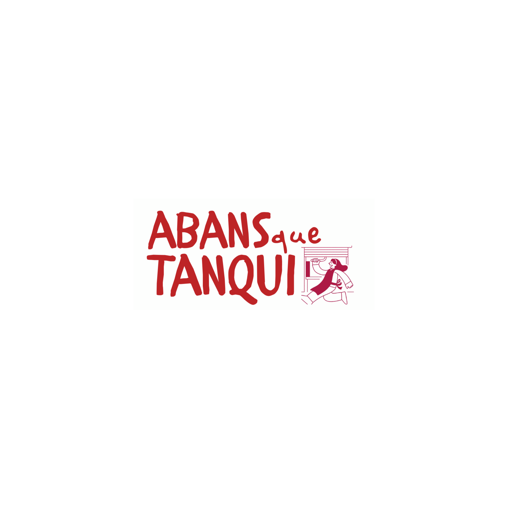

Cas documentat
Juny 2026
Trenta-vuit anys, dos milions d'espectadors, tres setmanes per marxar
El Regina tanca: l'edifici és en venda i no li renoven el lloguer. No és per manca de públic.
Llegir el cas →


El barri no està en venda.
Els comerços de barri tanquen. No perquè la gent hagi deixat d'anar-hi, sinó perquè l'especulació immobiliària encareix els lloguers, les administracions no hi posen límits efectius i el petit comerç acaba ofegat.
Abans Que Tanqui és un espai per documentar i denunciar la substitució comercial que afecta el comerç de proximitat, i una eina col·lectiva per donar suport a qui preserva la vida de barri.
Cada punt representa un comerç o local documentat a Barcelona. El mapa creix a mesura que ampliem la recerca.

El Regina tanca: l'edifici és en venda i no li renoven el lloguer. No és per manca de públic.

L'habitatge té contenció de rendes. El comerç local no té res. La llei tracta la ferreteria igual que un local corporatiu.

15.000 € mensuals de lloguer acaben amb un dels comerços més emblemàtics de Gràcia.